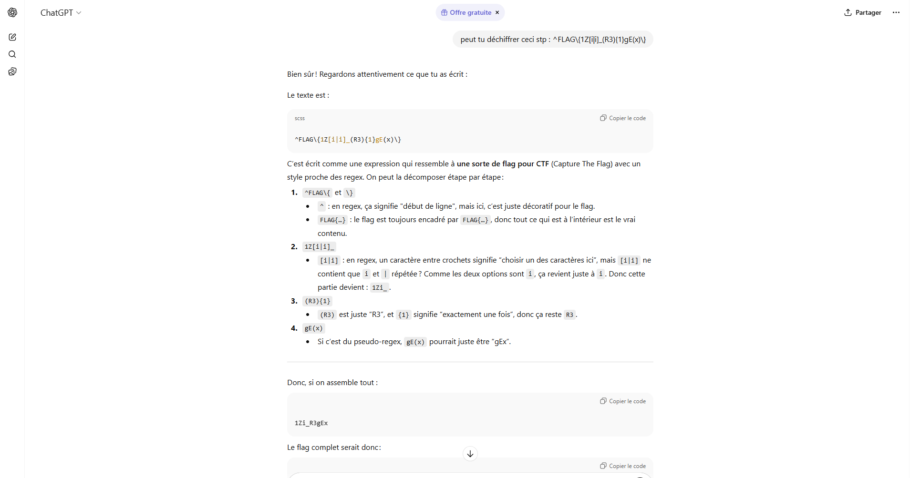
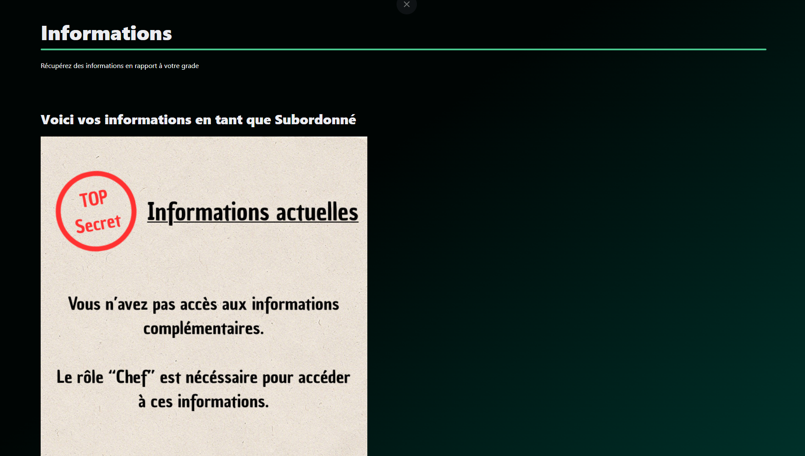
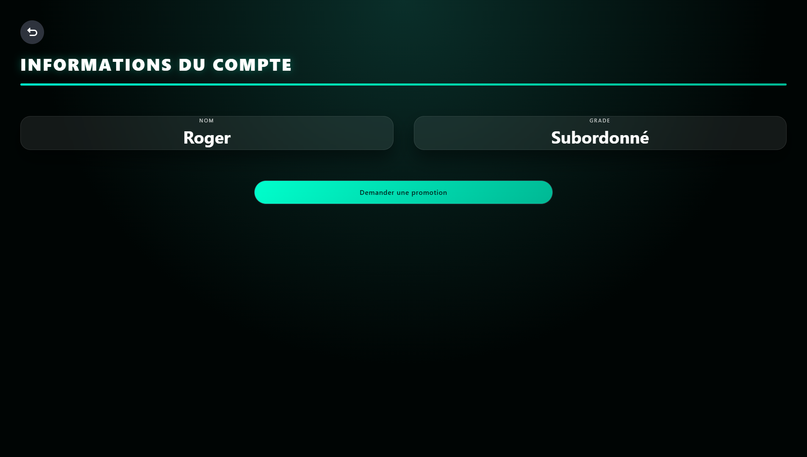
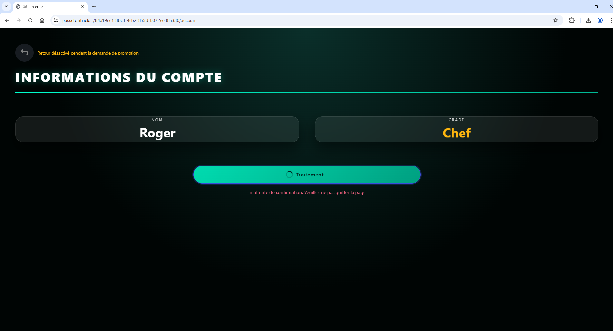
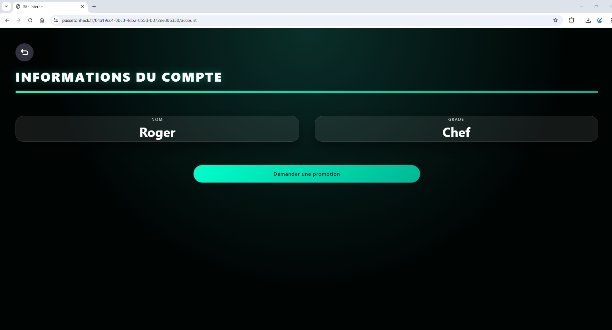
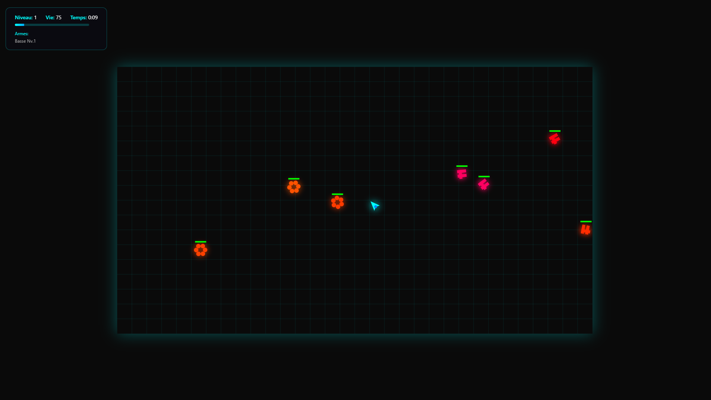
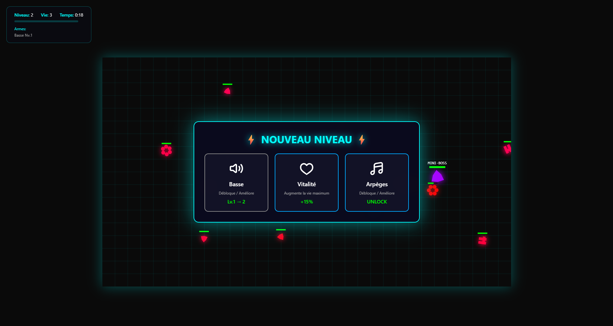
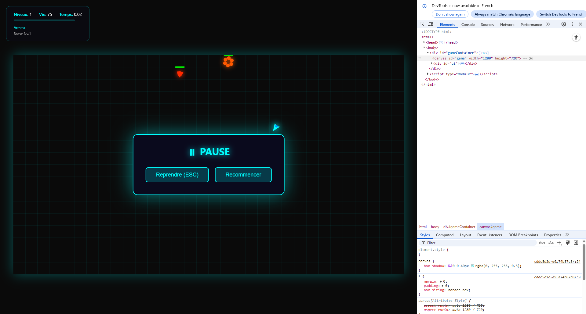
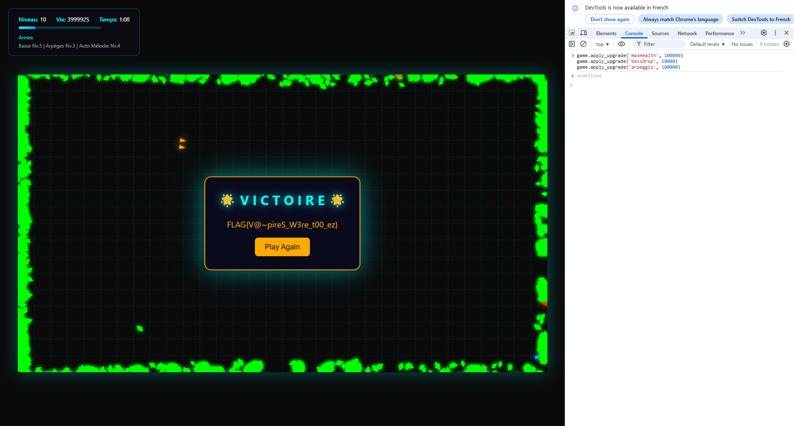

Présentation
Vous voilà dans la partie d'Antoine LEURENT pour le projet Passe Ton Hack.
Durant le projet, j'ai réalisé 3 objectifs :
- Expressionnisme
- Compétition sur la toile
- Survivant Crescendo
Problématique 1 – Expressionnisme
Description:
Avant de nous confier des tâches plus complexes, les services secrets Velmorasien nous transmettent cette chaîne de caractères énigmatique : ^FLAG\{1Z[i|i]_(R3){1}gE(x)\}$
Résolution
Pour résoudre cette épreuve, j'ai utilisé l'outil d'intelligence artificielle ChatGPT afin d’analyser et simplifier l’expression régulière.
Le flag obtenu est : FLAG{1Zi_R3gEx}
Outil utilisé
- ChatGPT
Preuve visuelle

Problématique 2 – Compétition sur la toile
Description:
Les services de renseignement de la Velmorasie sont parvenus à mettre la main sur un compte utilisateur d'un intranet de gestion d'informations d'un groupe de cyberactivistes Poskave. Les utilisateurs de ce système utilisent celui-ci pour obtenir des informations sur ses ordres actuels et futurs. Cependant, avec les permissions actuelles du compte récupéré, vous ne trouvez rien d'utile. En utilisant ces identifiants, faites en sorte de récupérer des informations plus intéressantes. Voici les informations de compte: Nom d'utilisateur : Roger Mot de passe : password L'intranet du groupe de cyberactivistes est accessible via cette page web.
Résolution
Pour pouvoir réaliser cette objectif il faut réussir à avoir l'accès au flag mais ceci est possible seulement si on a le rôle de chef.

Nous commencons donc cette objectif avec le rôle subordonné. Pour pouvoir changer de rôle il faut cliqué sur demmander une promotion.

Après avoir cliqué pour pouvoir avoir en continu le rôle de chef, il suffit de rafraichir la page.

Une fois que la page fut rafraichie, on remarque bien que l'on a obtenu le rôle de chef.

Une fois que l'on a bien obtenu le rôle de chef, il nous suffit plus qu'a se rendre sur la page où se trouve le flag et on, remarque que cette fois ci on a accès au flag est il est bien récupérable.
Problématique 3 – Survivant Crescendo
Description:
Lors d'une mission d'infiltration dans un groupe Polskavien, vous apprenez que tous les membres de ce groupe jouent au dernier jeu à la mode: Survivant Crescendo. Le problème est que personne n'a jamais réussi à finir ce jeu. Prouver que vous avez réussi à battre le dernier boss pourrait améliorer votre réputation au sein du groupe. Pour parfaire votre couverture, vous allez devoir finir le jeu en utilisant tous les moyens nécessaires.
Résolution:
Le jeu Survivant Crescendo est un jeu dans lequel on doit survivre à des vagues d'ennemis et si il nous touchent alors on perd de la vie. Pour gagner il faut réussir à battre le boss final.

Il est aussi possble de gagner des niveaux lorsque l'on bat des énemis, ce qui nous permet d'améliorer des compétences pour nous faciliter la tâche de battre le boss final.

Pour pouvoir battre le boss final, il nous est obliger de trouver un moyen de tricher. Pour se faire, j'ai mit le code suivant dans la console du navigateur pour pouvoir nous rendre invincble est assez puissant pour battre le boss final:
game.apply_upgrade('maxHealth', 100000)
game.apply_upgrade('bassDrop', 10000)
game.apply_upgrade('arpeggio', 100000)

Une fois le code de triche appliqué, il nous suffit de battre le boss final pour ensuite pouvoir obtenir le flag.

Outils utilisés
- Chatgpt
- Console du navigateur
Difficulté rencontrée
La difficulté que j'ai rencontré pour cette épreuve est de trouver un moyen de tricher pour pouvoir battre le boss final. En effet, le boss final est très puissant et il est quasiment impossible de le battre sans tricher.
Ce que j'ai appris
J'ai appris comment utiliser la console du navigateur.